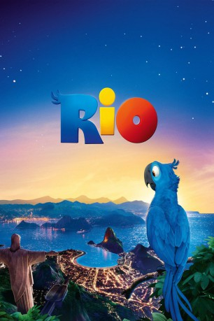

 
 IMDB-Wertung: 6.9 / 10
IMDB-Wertung: 6.9 / 10  Metascore:
Metascore: 
Der freche Ara Blu hat alles, was das Papageienherz begehrt: Eine liebevolle Besitzerin, immer genug Nüsse zum Knacken und ein Heim, in dem er machen kann, was er will. Was Blu jedoch nicht kann, ist fliegen, genau genommen ist er ein richtiger Couchpotatoe. Mit seiner Besitzerin Linda wohnt Blu in der beschaulichen Kleinstadt Moose Lake in Minnesota. Was er nicht weiß: Er ist der letzte männliche Papagei seiner Art.
Jahr: 2011
Dauer: 96 Minuten
FSK: 0
Land: USA Studio: 20th Century FoxTonspuren: DTS - ,
Untertitel:
Auflösung: 1080p (1920x800) Größe: 4218 MB
Genre: Animation/Trick, Abenteuer, Komödie, Familie, Musical
Regisseur: Carlos Saldanha
Drehbuch: Carlos Saldanha, Earl Richey Jones, Todd R. Jones, Don Rhymer, Joshua Sternin
Soundtrack: John Powell
Darsteller:
 Leslie Mann als Linda
Leslie Mann als Linda Jesse Eisenberg als Blu
Jesse Eisenberg als Blu Wanda Sykes als Chloe, The Goose
Wanda Sykes als Chloe, The Goose Jane Lynch als Alice, The Other Goose
Jane Lynch als Alice, The Other Goose Rodrigo Santoro als Tulio / Soccer Announcer
Rodrigo Santoro als Tulio / Soccer Announcer Jamie Foxx als Nico
Jamie Foxx als Nico Will.i.am als Pedro
Will.i.am als Pedro Anne Hathaway als Jewel
Anne Hathaway als Jewel Carlos Saldanha als Second Waiter
Carlos Saldanha als Second Waiter Carlos Ponce als Marcel, Lead Smuggler
Carlos Ponce als Marcel, Lead Smuggler Jeffrey Garcia als Tipa, Heavy Smuggler / Bat
Jeffrey Garcia als Tipa, Heavy Smuggler / Bat Jake T. Austin als Fernando
Jake T. Austin als Fernando Jemaine Clement als Nigel
Jemaine Clement als Nigel Thomas F. Wilson als Trapped Bird / Screaming Hang Glider
Thomas F. Wilson als Trapped Bird / Screaming Hang Glider George Lopez als Rafael
George Lopez als Rafael Judah Friedlander als Tourist
Judah Friedlander als Tourist Tracy Morgan als Luiz
Tracy Morgan als Luiz Ester Dean als Boy in Gondola
Ester Dean als Boy in Gondola Jean Gilpin als Additional Voices
Jean Gilpin als Additional Voices Nicholas Guest als Additional Voices
Nicholas Guest als Additional Voices Rif Hutton als Additional Voices
Rif Hutton als Additional Voices Matthew Wolf als Additional Voices
Matthew Wolf als Additional VoicesDatei: X:\Kinder Collections\Rio\Rio 1 (2011, FSKo.Al., 1920x800) 3D.mkv seit 12.03.2015
Festplatte: Kinder-Filme+Trick
 Alle Filme aus Gruppe 'Kinder Collections\Rio'
Alle Filme aus Gruppe 'Kinder Collections\Rio'
(der aktuelle Film)